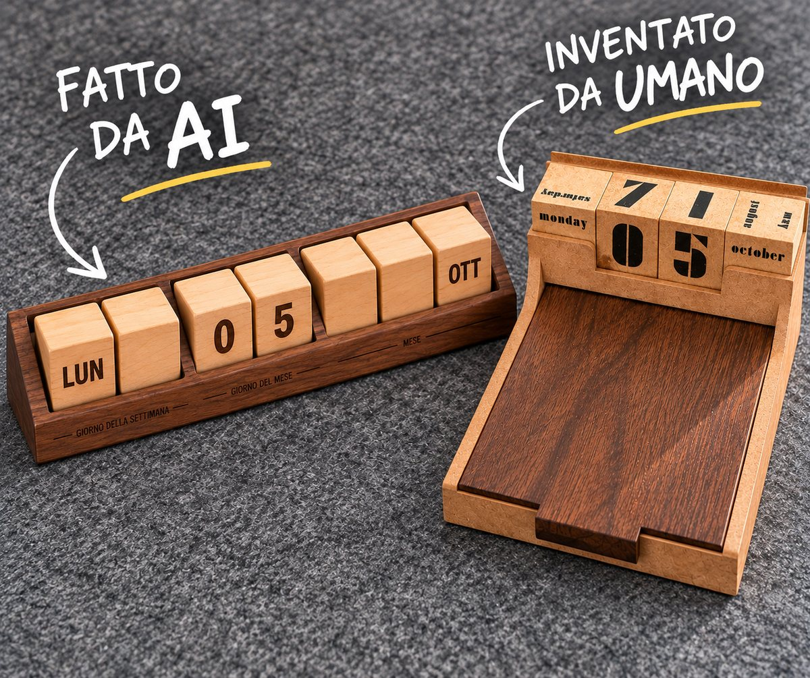

Ho chiesto a ChatGPT di progettare un calendario perpetuo di cubi di legno. Poi l'ho confrontato con quello inventato da una persona.

Sulla mia scrivania c'è un calendario perpetuo fatto di cubi di legno. Mostra il giorno della settimana, il giorno del mese e il mese. Mi ha incuriosito così tanto che ho voluto vedere come se la cavava l'intelligenza artificiale con lo stesso problema.
Il problema è tutto fisico: un cubo ha sei facce, quindi sei valori. I mesi sono dodici e i giorni della settimana sette, quindi nessuno dei due entra in un cubo. Anche le date da 01 a 31 sono un rompicapo, perché servono due cubi per le cifre e le facce disponibili sono poche. In più l'oggetto deve essere leggibile a colpo d'occhio e stare su una scrivania.
La prova con ChatGPT. La risposta è buona. Propone sette cubi: due per il giorno della settimana, due per le cifre, tre per il mese. I conti tornano, le date da 01 a 31 si compongono tutte e l'immagine che ha generato è ordinata e leggibile, con la data giusta. Lo dico volentieri, perché è una soluzione solida.
Ma osserva come ci arriva: accetta il vincolo e aggiunge pezzi. Dove un cubo non serve, lo lascia vuoto. Il problema resta quello di partenza, e la risposta diventa più grande.
La soluzione umana. Il calendario che ho sulla scrivania ne usa quattro: uno per il giorno della settimana, due per le cifre, uno per il mese. Il progettista non ha trovato un modo di far stare dodici mesi in sei facce. Ha cambiato il vincolo: su ogni faccia ci sono due scritte, una rovesciata di 180° rispetto all'altra, quindi un cubo porta fino a dodici valori. Un bordo rialzato sul fronte del contenitore nasconde la scritta in basso e lascia vedere solo quella giusta, come una finestra.
Il bordo, poi, non è uniforme: è più alto ai lati, dove stanno giorno e mese, e più basso al centro, dove le cifre sono più grandi. Il contenitore è diventato parte del meccanismo e organizza anche la gerarchia visiva. Non è un dettaglio decorativo, è il pezzo che rende possibile tutto il resto.
Cosa ne ricavo. L'intelligenza artificiale è bravissima a risolvere il problema così come glielo poni. L'ingegno umano fa un passo prima: si chiede se il problema sia posto bene, e lo riscrive. Una faccia può dire due cose, e il contenitore può lavorare insieme ai cubi: nessuno lo aveva scritto nel problema.
È la stessa idea che sta dietro all'experientismo: non vendere una camera, ma ripensare che cosa sia un soggiorno. L'AI è un alleato prezioso, lo uso ogni giorno nel mio lavoro, ma la domanda giusta, quella che cambia le regole, per ora la fa ancora una persona.
Michele Passalacqua
Uso cookie di misurazione per capire quali campagne pubblicitarie portano contatti. Puoi accettarli o rifiutarli: il sito funziona allo stesso modo. Informativa